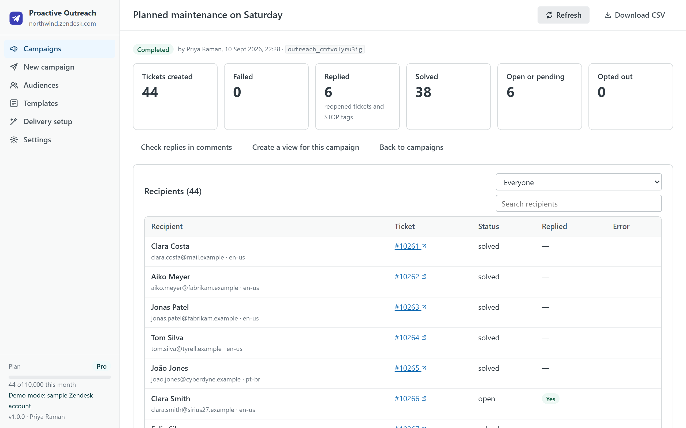
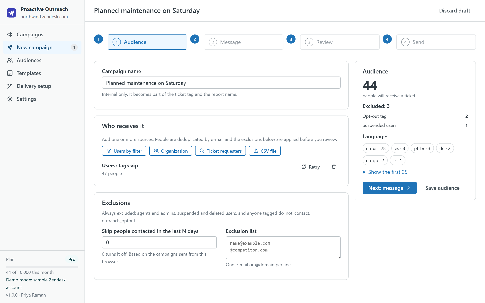
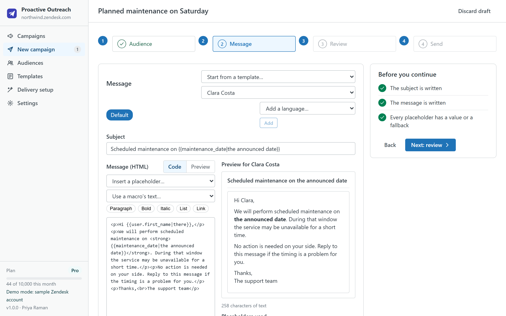
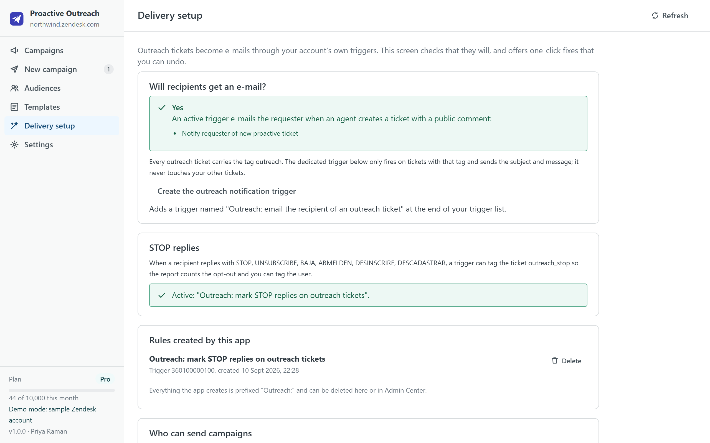

Proactive Outreach
Tell many customers something at once, from inside Support: a maintenance window, a recall, a policy change, a follow-up after an incident. Build the audience, write the message once, and the app creates one proactive ticket per person through your own account and support address. Replies come back as normal tickets, to the agents who already handle them.
Zendesk's Proactive Tickets app stops functioning after 21 October 2026 (unavailable for download since April 2026, unsupported since June). Proactive Outreach is an independent replacement from a third-party developer, not affiliated with or endorsed by Zendesk. What changes and how to migrate.

How it works
- Build the audience. End users by tag, language, organization or custom field; every member of an organization; the requesters of tickets that match tags, status or a date range; or a CSV file. Sources are merged and deduplicated by e-mail, and the app shows exactly who is excluded and why before you go on.
- Write the message once. Subject and HTML body with placeholders such as
{{user.first_name|there}}, organization fields, CSV columns and{{date}}, each with a fallback. Start from a template or a macro, preview it for a real recipient, and on Pro add a variant per language. - Review. The review step checks your plan, the trigger that will e-mail the tickets, unresolved placeholders, and asks for a test ticket to yourself above 100 recipients. You tick that you have a customer relationship with these people, then send.
- Send and watch. Tickets are created in batches through Zendesk's bulk API at the rate you set, with progress, pause and stop. If the tab closes, the campaign resumes later without sending anyone a second ticket.
- Read the report. Created, failed (with the exact Zendesk error and a retry), replied, opted out; one row per recipient with a link to the ticket; CSV export; a Zendesk view for the campaign in one click.

Built for support teams, with guard rails
- Exclusions before anything is sent: agents, suspended and shared users, people with an opt-out tag, anyone contacted by a campaign in the last N days, domains you list, invalid addresses, and a hard cap per campaign.
- Opt-outs that stick: the app can create a trigger that tags a ticket when a reply says "stop", "unsubscribe" or the words you choose; the report counts those replies and one click tags the users so the next campaign skips them.
- Test first: a test ticket to your own address renders the message with a real recipient's data. It is required above 100 recipients.
- Who can send: admins choose the groups allowed to send campaigns; everyone else can look but not send.
- Rate limits respected: a per-minute limit you control (200 by default), at most two bulk jobs in flight, and Zendesk's own throttling absorbed rather than surfaced as errors.

Delivery setup
Zendesk e-mails a proactive ticket to its requester through a trigger, usually the standard "Notify requester of new proactive ticket". The Delivery setup screen checks that such a trigger exists and is active. If it does not, the app can create one scoped to the outreach tag, so nothing else on your account changes. It can also create the STOP trigger and, per campaign, a view. Every rule the app creates is listed there and can be deleted from the same screen.

Plans
| Free | Starter · $19 | Pro · $49 | Business · $99 | |
|---|---|---|---|---|
| Outreach tickets per month | 200 | 1,000 | 10,000 | 50,000 |
| Recipients per campaign | 50 | 1,000 | 10,000 | 50,000 |
| Audience sources (users, organizations, ticket requesters, CSV) | ✓ | ✓ | ✓ | ✓ |
| Exclusions, opt-out tags, recently-contacted window | ✓ | ✓ | ✓ | ✓ |
| Placeholders, templates, macros, test ticket | ✓ | ✓ | ✓ | ✓ |
| Saved audiences and templates | 1 each | 5 each | Unlimited | Unlimited |
| Reports with CSV export, retry, opt-out tagging | ✓ | ✓ | ✓ | ✓ |
| One message variant per language | — | — | ✓ | ✓ |
| A Zendesk view per campaign | — | — | ✓ | ✓ |
| Priority support (one business day) | — | — | — | ✓ |
| Free trial | 14 days | 14 days | 14 days |
Prices are per month per Zendesk account, not per agent, billed through the Zendesk Marketplace and cancellable from Admin Center at any time. The monthly counter is the number of tickets carrying the outreach tag created on your account that month, so several agents share one quota.
Compared with the alternatives
| Proactive Outreach | Proactive Campaigns (GrowthDot) | Sparkly | Your own script or App Builder | |
|---|---|---|---|---|
| Pricing | Per account, from $0 | Per agent, from $5 per agent per month | Per account, from $99 per month | Engineering time, plus hosting if it runs outside Zendesk |
| Where your data goes | Stays in your Zendesk account and the agent's browser | Vendor servers | Vendor servers | Wherever you run it |
| Audience from tickets and CSV | ✓ | ✓ | ✓ | Write it |
| Resume after an interruption, no duplicates | ✓ | Varies | Varies | Write it |
| Opt-out handling | STOP trigger, tags, exclusions | Varies | Varies | Write it |
| Scheduling and open tracking | Not in v1 (see FAQ) | ✓ | ✓ | Write it |
Competitor details are from their public listings in September 2026 and may change; check their pages before deciding.
Privacy
The app has no server. It reads users, organizations, tickets, groups, brands, forms, macros, triggers and views through the Zendesk API with the signed-in agent's session, and writes only what you ask for: the tickets of a campaign when you click Send, the two triggers and the views it offers to create, the opt-out tag on users, and its shared settings as a setting of its own installation. Campaigns, audiences, templates and the delivery ledger live in the browser's local storage on the agent's computer and can be cleared from Settings. Nothing is sent to the developer or to any third party; there are no analytics, cookies or AI services. The same privacy policy and terms as Help Center Doctor apply.
Install
- Open the listing on the Zendesk Marketplace (link added once the listing is approved), click Install and choose a plan. You need to be a Zendesk admin.
- Choose the roles or groups that may use the app, then click Install.
- In Zendesk Support, open Proactive Outreach from the left navigation bar, visit Delivery setup once, then click New campaign.
Frequently asked questions
Will the customers see a normal ticket? Yes. Each recipient gets a ticket created on their behalf, e-mailed by your own trigger from your support address, with your branding. Their reply reopens that ticket like any other.
Do I have to keep the tab open? Yes, while the campaign is sending: the app runs in your browser and has no server. A thousand tickets take about five minutes at the default rate. If the tab closes, open the campaign again and click Resume; nobody is sent a second ticket.
Can I schedule a campaign for later? Not in version 1. Scheduling while the tab stays open, and a ticket-sidebar companion, are the next items on the roadmap.
Does it track opens or clicks? No, and by design: there are no tracking pixels or rewritten links. The report counts what Zendesk knows, which is tickets, replies and opt-outs.
What happens to Zendesk's Proactive Tickets app? Zendesk announced that it is no longer downloadable since 7 April 2026, unsupported after 30 June 2026 and stops functioning after 21 October 2026. Tickets it created stay in your account. Our migration guide covers what to check and how to run your first campaign here.
Also from the same developer: Help Center Doctor finds and fixes broken links, missing images, stale content and structure problems; Help Center Find & Replace changes text, links and images across every article; Help Center Print & Export turns articles into PDF, Word, HTML, Markdown, ZIP and CSV; Help Center Article Templates drafts articles from templates; Help Center Link Checker is the free link checker.
Support: support@helpcenterdoctor.app, answered within one business day.